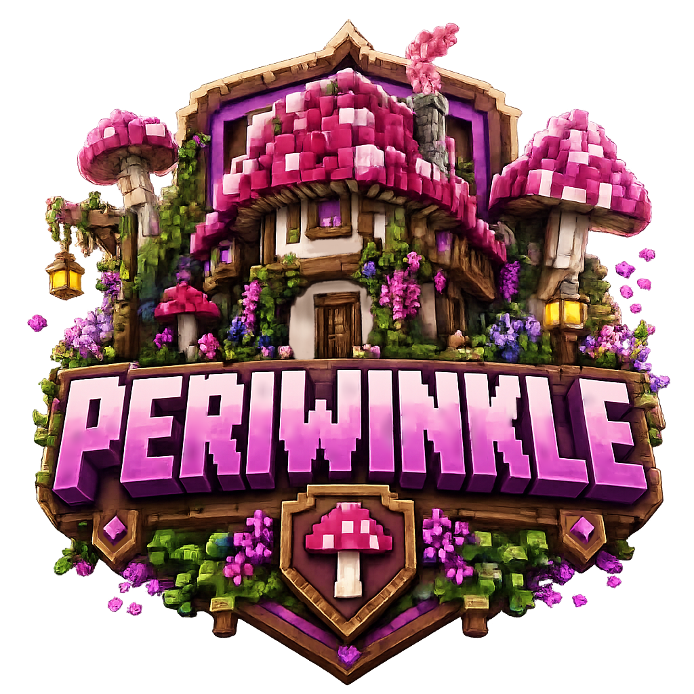

Viewer Login
Minecraft Player
Use your Minecraft in-game name and Discord username before sending a trade request.

PeriwinkleLogin Area
Login here before using the trade request board. Viewers use Minecraft IGN and Discord username. Periwinkle uses one owner account.
Viewer Login
Use your Minecraft in-game name and Discord username before sending a trade request.
Owner Login
One shared Periwinkle team account for managing trade requests.
Current Access
Log in as a viewer to submit a request, or as Periwinkle team to manage requests.